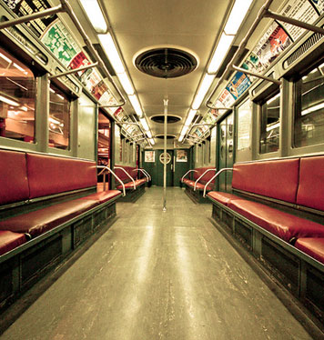

The Places You'll Go!
New York Transit Museum
|  |
Cost:
Free on Wedesday! |
||||||||||||
| Alone or with a family this is a treasure. Plan at least a couple of hours or more to visit this very informative attraction. The history of the Subway is captured in many great old pictures and displays. The presentation is appealing to both young and old. Exhibits are hands on, covering more than just trains. Saturday and Sunday also have on-site guided tours. See how the Subway in NYC began! | |||||||||||||